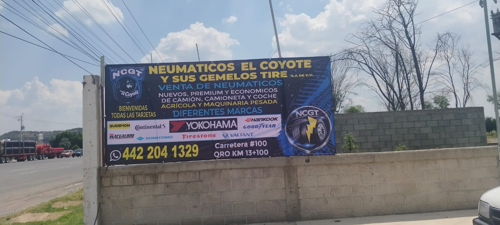

Venta de neumáticos
Opciones para coche, camioneta, camión, equipo agrícola y maquinaria pesada.
Ver neumáticos →Venta de neumáticos y servicios especializados para particulares, empresas y flotillas en Galeras, Colón, Querétaro.
En NCGT - Neumáticos El Coyote y sus Gemelos Tire atendemos las necesidades relacionadas con neumáticos de particulares, empresas y flotillas.
Contamos con opciones de neumáticos para coche, camioneta, camión, equipo agrícola y maquinaria pesada.
Además de la venta de neumáticos, ofrecemos servicios de semáforeo, inspección de flotillas, recolección de neumáticos de desecho y capacitación teórica y práctica.

Nuestra atención comprende desde la venta de neumáticos hasta servicios orientados al control y seguimiento de los neumáticos de una flotilla.
Opciones para coche, camioneta, camión, equipo agrícola y maquinaria pesada.
Ver neumáticos →Semáforeo e inspección para apoyar el control, seguimiento y mantenimiento preventivo de neumáticos.
Ver servicios →Capacitación teórica y práctica relacionada con neumáticos, su revisión, seguimiento y atención.
Ver capacitación →Para empresas y flotillas, NCGT ofrece el servicio de semáforeo de neumáticos.
Mediante un código de colores verde, amarillo y rojo se clasifica su condición para facilitar el seguimiento del desgaste y apoyar la programación de su atención.
Condición adecuada para continuar en operación.
Requiere seguimiento y revisión.
Requiere atención prioritaria.
NCGT se encuentra sobre Carretera Estatal 100 Qro. km 13+100, en Galeras, Colón, Querétaro.
Puedes utilizar Google Maps para consultar la ruta desde tu ubicación.
Comunícate con nosotros para consultar neumáticos, servicios y disponibilidad.